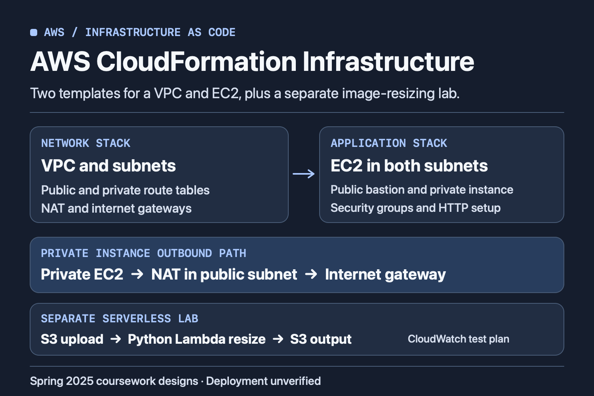

INDIVIDUAL COURSEWORK · Spring 2025 · SEIS 615
AWS CloudFormation Infrastructure Labs
I wrote CloudFormation templates for a VPC and an application stack, then traced outbound traffic from a private EC2 instance.

Network and application stacks
I authored a YAML network template for a VPC, public and private subnets, route tables, a NAT gateway, and an internet gateway. A separate YAML application template defined a public bastion and a private EC2 instance. The private instance’s outbound internet path runs through the NAT gateway and then the internet gateway.
Separate serverless lab
I documented an S3-triggered Python Lambda image-resize workflow and a CloudWatch test plan. The case study covers the authored designs and planned checks. AWS deployment and Lambda runtime execution remain unverified.